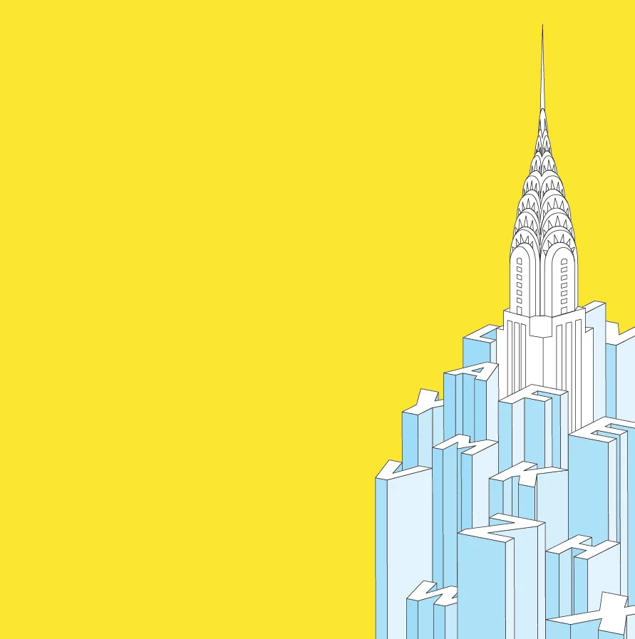

2012 – 2018
Visual Design
Some of my previous work of brand identity, interaction design, and side projects exploring visual craft, typography, and creative product solutions.
Project at a glance
Branding
Identity and campaign work — wordmarks, seasonal artwork and the milestone graphics a product reaches for when it has something to celebrate. The brief was usually a number or a date; the job was making it feel like an occasion.


Illustration & Iconography
Character avatars, achievement badges and icon sets drawn to hold up at small sizes. Most of it came down to deciding what a shape can afford to lose — and testing the same glyph filled against stroked before committing a set to it.

Posters and editorial pieces, mostly self-directed. Type doing the work of an image — set on a curve, cropped hard, or left alone on a flat field of colour.
-

-
